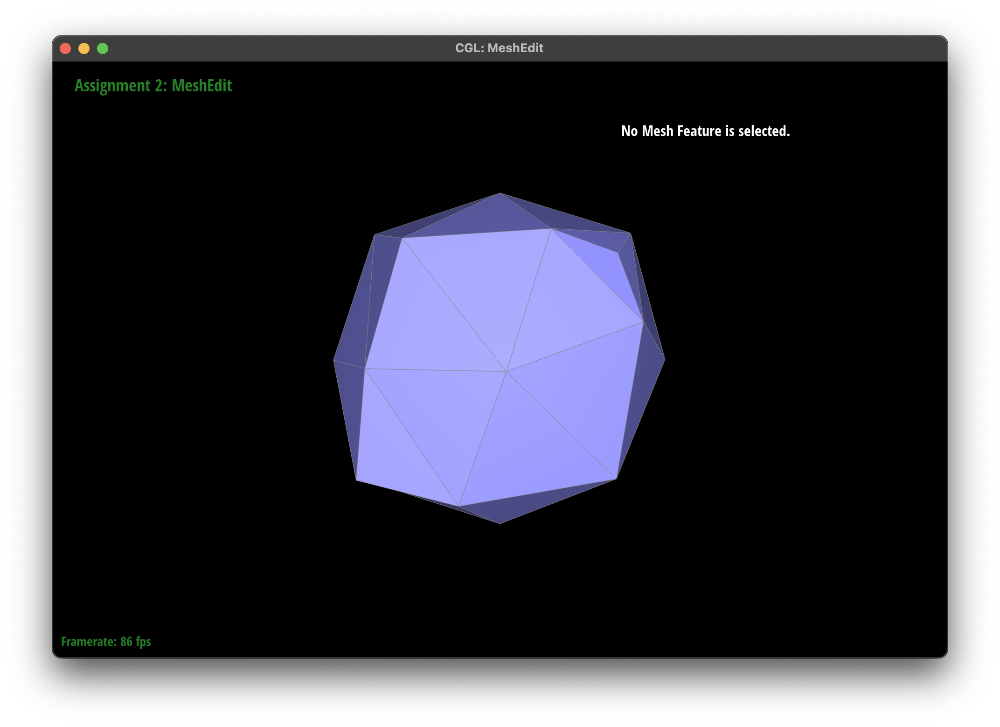

CS 184: Computer Graphics and Imaging, Spring 2024
Project 2: Mesh Edit
Yuxiang Jiang
Overview
In this assignment, I explored two methods for creating 3D geometric models in computer graphics. One method involves using Bezier surfaces, which produce smooth surfaces but require more rendering time. A faster alternative is using triangle meshes, although this may result in less smooth surfaces initially, we can enhance the quality using techniques such as Phong Shading and upsampling methods like Loop Subdivision. This allows us to ultimately create a more authentic model .
I experienced a hard time debugging my code. However, through careful and thorough inspections, I discovered that some of the bugs were actually features of the skeleton code! It's not a bug, it's a feature! 🥳
Section I: Bezier Curves and Surfaces
Part 1: Bezier Curves with 1D de Casteljau Subdivision
Briefly explain de Casteljau's algorithm and how you implemented it in order to evaluate Bezier curves.
De Casteljau's algorithm is a method using recursive linear interpolations to derive a point on the Bezier curve. It computes the linear interpolation of nearest two points in each level, until there's only one point left in the final level. In my code, I compute linear interpolation of nearby two points from start of current level set to end, and store the result to pass to the next level.
Take a look at the provided .bzc files and create your own Bezier curve with 6 control points of your choosing. Use this Bezier curve for your screenshots below.
 whole curve
whole curve
|
Show screenshots of each step / level of the evaluation from the original control points down to the final evaluated point. Press E to step through. Toggle C to show the completed Bezier curve as well.
|
Level 0
|
Level 1
|
|
Level 2
|
Level 3
|
|
Level 4
|
Show a screenshot of a slightly different Bezier curve by moving the original control points around and modifying the parameter \(t\) via mouse scrolling.
 another curve
another curve
|
Part 2: Bezier Surfaces with Separable 1D de Casteljau
Briefly explain how de Casteljau algorithm extends to Bezier surfaces and how you implemented it in order to evaluate Bezier surfaces.
In order to extend de Casteljau's algorithm to Beizier surfaces, we only need to perform this algorithm on two dimensions separately. To be specific, we get a 2D $n \times n$ grid of control points initially. We first perform de Casteljau's algorithm on each row of control points with parameter $u$, and get $n$ new control points. We then perform the algorithm on the new control points, and get the points we want on the Bezier surface.
Show a screenshot of bez/teapot.bez (not .dae) evaluated by your implementation.
Section II: Triangle Meshes and Half-Edge Data Structure
Part 3: Area-Weighted Vertex Normals
Briefly explain how you implemented the area-weighted vertex normals.
For each face incident to this vertex, we compute its normal(using the cross product and then normalize it), and multiply it by its area (using the 2-norm of the cross product). Then, we sum these values together. Finally, we normalize the resulting sum vector to obtain the area-weighted vertex normal.
Show screenshots of dae/teapot.dae (not .bez) comparing teapot shading with and without vertex normals. Use Q to toggle default flat shading and Phong shading.
 teapot with flat shading
teapot with flat shading
|
 teapot with Phong shading
teapot with Phong shading
|
Part 4: Edge Flip
Briefly explain how you implemented the edge flip operation and describe any interesting implementation / debugging tricks you have used.
Implementing these operations with a Half-Edge data structure can be quite challenging. It requires considering all mesh elements that will be affected, and there's a high risk of accidentally overlooking some parts. Initially, I attempted to analyze which elements would undergo changes and only focused on writing code for them. However, I eventually abandoned this approach due to encountering mysterious bugs.
In the end, I choosed to track every vertex, face, edge, and half-edge that could potentially be affected. I drew their relationships before and after the flip explicitly on paper and wrote code for each of them. While this approach might result in some redundant code that has no effect, it ensures the avoidance of bugs and guarantees a more robust implementation.
But then I discovered a strange scene after several specific flips.
After I randomly flip the edges for several times, I got this strange scene. A part of the surface become completely black! This triangle is on the surface and clearly shouldn't be black. I thought it was due to some bug of my code. But after careful reasoning, I figured that this is actually a inevitable result of flip operation. If two triangles form a convex shape, when we perform flip operation on their cross edge, the normal vector of one triangle will point to inside the teapot. As a result, when we compute shading on this triangle, it will become black. But if we try to add a surface on the other side of the triangle to solve this issue, the mesh will no longer be a 2D manifold, since an edge cannot have more than two faces! So, this is not a bug, it's a feature!
|
teapot with Phong shading
|
Show screenshots of a mesh before and after some edge flips.
 Before flip
Before flip
|
After flip
|
Write about your eventful debugging journey, if you have experienced one.
YOUR RESPONSE GOES HERE
Part 5: Edge Split
Briefly explain how you implemented the edge split operation and describe any interesting implementation / debugging tricks you have used.
With the same method used in implementation of flip, I draw the relationships of every mesh elements that could possibly be affected on the paper. The only different thing is that in split operation, we need to create new mesh elements and also keep track of them. The remaining work is just translate the relationship on the paper to code and be careful of typo! Surprisingly, I didn't even write a bug in this part!😎
Show screenshots of a mesh before and after some edge splits.
|
Before splits
|
After splits
|
Show screenshots of a mesh before and after a combination of both edge splits and edge flips.
|
Before splits and flips
|
After splits and flips
|
Part 6: Loop Subdivision for Mesh Upsampling
Briefly explain how you implemented the loop subdivision and describe any interesting implementation / debugging tricks you have used.
I first compute new positions for all original vertices in the mesh, and store them in vertex->newPostion. Then I compute those new vertices(generated by loop subdivision) postions, and store in the corresponding edges->newPosition. Then I split every edges and flip those "blue" edges. Finally I update the postion of all vertices using the value stored in vertex->newPosition and edges->newPosition.
To keep track of those edges need to be fliped, I add new member variables called "isNew_blue" and "isNew_black", which represent new edges needed to be fliped and not separately. These two bool values are updated in split function according to the vertices the edge connects. These two variables also help avoid infinite loop when we add edges to the mesh.
Take some notes, as well as some screenshots, of your observations on how meshes behave after loop subdivision. What happens to sharp corners and edges? Can you reduce this effect by pre-splitting some edges?
|
Teapot before Loop subdivision
|
Teapot after Loop subdivision
|
From pictures above we can see that sharp corners and edges are smoothed after loop subdivision.
We can reduce this effect by pre-splitting some edges. These are result of loop subdivision with and without pre-splitting, the latter one clearly have sharper corners and edges.
|
Cube after Loop subdivision without pre-splitting
|
Cube after Loop subdivision with pre-splitting
|
Load dae/cube.dae. Perform several iterations of loop subdivision on the cube. Notice that the cube becomes slightly asymmetric after repeated subdivisions. Can you pre-process the cube with edge flips and splits so that the cube subdivides symmetrically? Document these effects and explain why they occur. Also explain how your pre-processing helps alleviate the effects.
|
Cube after several Loop subdivision
|
|
Cube on one side
|

Cube on another side
|
From the picture of cube after several loop subdivision we can see that it's slightly asymmetric. When we view the cube after its first subdivision from different sides, we notice the difference between sides.
From this we can conclude that, the asymmetry result from the different directions of edges on the original cube. On some faces the edge goes from top left to bottom right, and on other faces the edge goes from top right to bottom left. This result in different degrees for vertices of the cube. Also, the constant in the fomula of updating the position of an old vertex is determined by degrees. Thus, different vertices will lie in asymmetric position after loop division, which causes the deformation we see.
So, we need to make sure degree of every vertices are the same at the start. We can then split all diagonal edges across all faces before loop subdivision, and all vertices have the same degree.